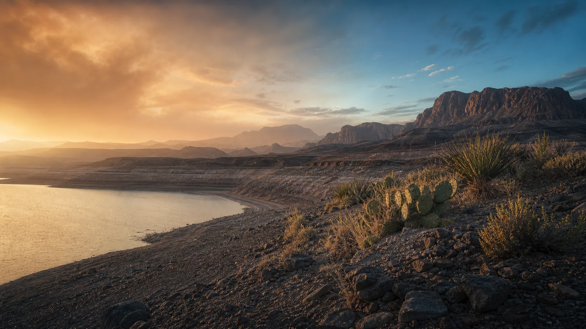

Global surface warming
Average global surface temperature in 2011–2020 compared with 1850–1900.
IPCC synthesis report
A personal climate project by Julian Burnley
Not a distant crisis. Not a single storm. A measurable change touching the water we share, the air we breathe, and the places we call home.
Original editorial image created for this project
Climate change can feel too enormous to hold in one thought. So this story starts with what is known, moves through what is changing, and ends with what remains possible.
This project began as my 2021 CIS133DA final assignment. I rebuilt it as a nontechnical passion project: more careful with evidence, more honest about uncertainty, and more useful to anyone wondering where they fit in the climate story.
What the evidence says
Climate science is built from many independent observations. These figures are not predictions; they describe changes already measured.
Average global surface temperature in 2011–2020 compared with 1850–1900.
IPCC synthesis reportMeasured increase between 1901 and 2018, with the rate accelerating over time.
IPCC summaryEach additional increment of warming intensifies multiple, concurrent hazards.
Read the findingThe IPCC concludes that human activities—principally greenhouse-gas emissions—have unequivocally caused global warming.
A Southwestern lens
“Close to home” means recognizing that a hotter atmosphere changes the odds before the next drought, wildfire season, or extreme-rain event begins.
NOAA attribution research found that climate change and La Niña together made the 2020–2021 extreme drought in California and Nevada six times more likely. That does not mean climate change acts alone. It means the background conditions have shifted.
Explore NOAA’s attribution researchWhat changes with the climate
Warming intensifies the water cycle, contributing to more severe wet and dry extremes. In arid regions, higher heat also increases water loss from soils and reservoirs.
A warmer atmosphere can hold more moisture. NOAA reports high confidence that human-caused warming has increased extreme tropical-cyclone rainfall, while trends in storm frequency require more nuance.
Rapid changes across the ocean, ice, land, and atmosphere disrupt habitats and seasonal relationships. Species already under pressure often have the least room to adapt.
Climate risks are not distributed evenly. Communities with fewer resources—and those that contributed least to warming—often face the greatest exposure and hardest recovery.
Climate briefing
Automatically collected twice daily from approved official feeds. This page displays only article metadata and short source-provided descriptions; complete reporting remains with the original publisher.
Loading the latest briefing…
Gathering recent articles from approved feeds…
Editorial policy: Sources are allow-listed for authority and relevance. Articles are deduplicated automatically. Inclusion does not imply endorsement, and no complete article or publisher photograph is republished here.
Turn concern into practice
Individual choices are not a substitute for policy or institutional change. They are one way to build momentum, reduce waste, save resources, and make climate action visible to others.
Your starting point
0Choose one action you can realistically repeat. Progress grows through practice.
More actions from the EPAThe thought I want to leave with you
Sources and transparency
This is an educational passion project, not a scientific assessment. Claims were revised against primary public sources in July 2026. Follow the links to review the evidence and its context.